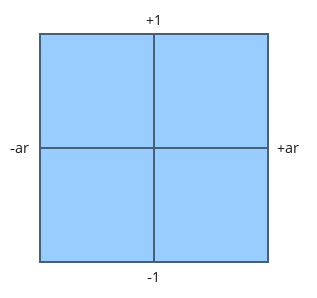
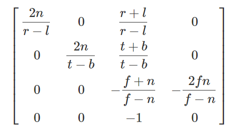
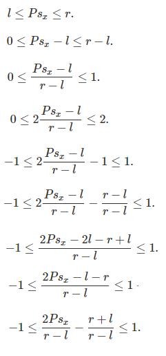
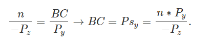
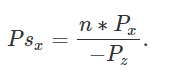
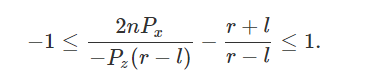
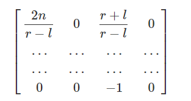
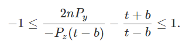
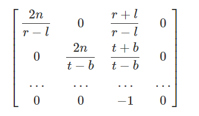
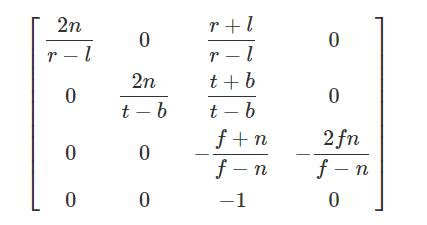

本文部分内容翻译自：Tutorial 12: Perspective Projection
本文介绍的是OpenGL中的透视矩阵。
介绍
所谓的透视矩阵，指的是一个“降维”的转换过程。
设想下一个在3维空间里的3D模型，它必然拥有一些顶点信息，设其中任意顶点的坐标为(x,y,z,1)（后面的1是齐次坐标的意思），当我们需要把这个模型投影到某个平面上时，它就从3维变成了2维（看过三体3的童鞋就容易理解了，这就是二向箔!），而顶点坐标(x,y,z,1)则变成(x,y,d,?)。
可以注意到，经过透视变换后的顶点，依然是四维的形式，只是含义变了，其中的(x,y)分量指的是这个顶点在投影平面上的坐标(显然是因为投影平面相当于一个2维坐标系)。d指的是这个投影点的深度(depth)，d一般是规范化的，范围是[-1,1]。d的作用在下一个渲染阶段(Depth Test)大有用处。而后面的?，无法一言蔽之，下文会讲到这个问题。
视锥体 Frustum
视锥体，指的是一个有限的椎体空间，处于这个视锥体里的对象，才是“可见”的对象，可见的对象会被渲染到“视平面”上（三维到二维的投影）。视锥体有4个参数：
- aspect ratio，简称ar，ar = 视平面width/视平面height
- （vertical）field of view，简称fov，指yz平面的视角大小，即下文的\( \alpha \)角。
- near Z Plane，简称near面，是一个平行于xy平面的面，世界坐标系下是一个浮点值，可以用来裁剪太靠近摄像机的物体
- far Z Plane，简称far面，含义类似near面，可以用来裁剪太远离摄像机的物体
视平面可以认为是视锥体的near面；far面相对来说并没有那么重要，因为我们知道人眼的“视锥体”是没有far面的（比如裸眼可以看到月亮星星，far面其实是无限远的），在图形学中，far面主要是用来裁剪太过遥远的物体、提高渲染效率的。
下面这个是我找到的一个视锥体的演示程序，非常直观地展示了视锥体的作用：
演示程序来源：http://webglfundamentals.org/webgl/lessons/webgl-3d-perspective.html
从摄像机位置（一个点）观察视平面的话，是长这样子的：

(图片来自www.ogldev.org)
y轴范围是[-1,1]，x轴范围是[-ar,ar]，因为ar = 视平面width/视平面height，其实也就是ar=屏幕width/屏幕height，因为大部分屏幕都是宽屏，所以ar的值一般是大于1的。当屏幕宽高一致时，视平面才是上面这幅图的样子。
矩阵推导
现在，换成侧视角来观察这个视锥体(yz平面)：

(图片来自www.ogldev.org，有修改)
红线是投影面(视平面)，绿色线是摄像机到投影面的向量d，\(\alpha \)角即是fov。注意，OpenGL在“世界坐标系”中，用的是右手坐标系，所以上图中，z轴的左边才是1、右边是-1。因此，向量d的长度是-d（要取反，不然会计算错误）。综上，可以得出：
\[ tan(\frac {\alpha } { 2 } ) = \frac {1} {|\vec d|} \]
\[ |\vec d| = -d = \frac {1} { tan(\frac {\alpha } { 2 } ) } \]
接下来是求某顶点\( (x,y,z,w) \)在投影面上的投影坐标\( (x_{p},y_{p},z_{p},w_{p}) \)。 看下面的侧视图，我们可以先求解\( y_{p} \)：

根据相似三角形定理，可以得到：
\[ \frac {y_{p} } { |\vec d| } = \frac { y } { -z } \]
\[ y_{p} = \frac { y * |\vec d| } { -z } = \frac { y } { -z * tan(\frac {\alpha } { 2 } ) } \]
注意，这里的z需要取反，因为上面的等式里，\(y_{p}\)和y同符号，\(|\vec d|\)是正号，而z显然本身是负值，所以z要取反。
同样的，x分量也可以用相同的公式求得：
\[ \frac {x_{p} } { |\vec d| } = \frac { x } { -z } \]
\[ x_{p} = \frac { x * |\vec d| } { -z } = \frac { x } { -z * tan(\frac {\alpha } { 2 } ) } \]
此时要考虑到一个问题： \( y_{p} \)的范围是[-1,1]，而\( x_{p} \)是[-ar, ar]。为了让\( x_{p} \)和\( y_{p} \)一致，需要让\( x_{p} \)除以ar，从而得到：
\[ x_{p} = \frac { x } { -z * ar * tan(\frac {\alpha } { 2 } ) } \]
\[ y_{p} = \frac { y } { -z * tan(\frac {\alpha } { 2 } ) } \]
到了这里，我们可以开始构造下透视矩阵了：
\[ Perspective Matrix = M = \left[ \begin{matrix} a&b&c&d\\ e&f&g&h\\ i&j&k&l\\ m&n&o&p\\ \end{matrix} \right] \]
被转换的顶点的坐标(矩阵)是：
\[ V = \left[ \begin{matrix} x\\ y\\ z\\ w\\ \end{matrix} \right] \]
转换后的投影点是:
\[ V_{p} = \left[ \begin{matrix} x_{p} \\ y_{p} \\ z_{p} \\ w_{p} \\ \end{matrix} \right] \]
转换过程:
\[ MV = V_{p} \]
\[ \left[ \begin{matrix} a&b&c&d\\ e&f&g&h\\ i&j&k&l\\ m&n&o&p\\ \end{matrix} \right] \left[ \begin{matrix} x\\ y\\ z\\ w\\ \end{matrix} \right] = \left[ \begin{matrix} x_{p} \\ y_{p} \\ z_{p} \\ w_{p} \\ \end{matrix} \right] \]
从以上等式可以得到:
\[ ax + by + cz + dw = x_{p} = \frac { x } { -z * ar * tan(\frac {\alpha } { 2 } ) } \]
这是M矩阵第一行和V的点积等式。求解这个等式的话，会发现可以让b=0、d=0（因为右式没有y、w），从而等式简化成:
\[ ax + cz = \frac { x } { -z * ar * tan(\frac {\alpha } { 2 } ) } \]
这样做后就有了个问题：找不到可以代入a、c的常量值。其中左边比较多余的cz项，如果可以干掉的话，意味着c必须等于0。这么做后，等式进而变成:
\[ ax = \frac { x } { -z * ar * tan(\frac {\alpha } { 2 } ) } \]
观察等式，可以发现等式右边有个多余的z。OpenGL中对这个问题的处理是，在变换过程中强(偷)制(偷)插入一个步骤：把矩阵相乘的结果值再统一除以-z。对，没错，确实是-z而不是z，负号的作用是把坐标从右手坐标系转换到左手坐标系，原因是NDC(Normalized Device Coord)坐标系是左手坐标系，即NDC的z轴的正方向是朝向屏幕里面的。这个除以-z的技巧被称为Perspective Divide。
这么做之后，事情就简单了，上面的等式可以推出：
\[ a = \frac { 1 } { ar * tan(\frac {\alpha } { 2 } ) } \]
对于M矩阵的f，用同样的做法:
\[ ex + fy + gz + hw = y_{p} = \frac { y } { -z * tan(\frac {\alpha } { 2 } ) } \]
\[ fy + gz = \frac { y } { -z * tan(\frac {\alpha } { 2 } ) } \]
\[ fy = \frac { y } { -z * tan(\frac {\alpha } { 2 } ) } \]
\[ f = \frac { 1 } { tan(\frac {\alpha } { 2 } ) } \]
从而得到了M的前两行的值：
\[ M = \left[ \begin{matrix} \frac { 1 } { ar * tan(\frac {\alpha } { 2 } ) }&0&0&0\\ 0&\frac { 1 } { tan(\frac {\alpha } { 2 } ) }&0&0\\ i&j&k&l\\ m&n&o&p\\ \end{matrix} \right] \]
到了这里，其实透视变换问题已经解决大半了，因为\(x_{p}\)和\(y_{p}\)都可以算了，并且可以规范化到[-1,1]范围。剩下的问题是\(z_{p}\)，即顶点的深度信息。
前面提到的Perspective Divide会导致一个问题：z分量在转换过程中会因为Perspective Divide而导致变成-1。针对这个问题，OpenGL的解决方案是，把V的z值取反并复制覆盖到w上，从而把原始z值保存起来（也就是M矩阵的第四行所负责的事情），同时Perspective Divide仅对x、y、z有效（跳过w）。
因此，M的后两行也可以得到了：
\[ M = \left[ \begin{matrix} \frac { 1 } { ar * tan(\frac {\alpha } { 2 } ) }&0&0&0\\ 0&\frac { 1 } { tan(\frac {\alpha } { 2 } ) }&0&0\\ 0&0&0&0\\ 0&0&-1&0\\ \end{matrix} \right] \]
然而，事情还没有结束。现在用这个新的M去做透视变换后，得不到规范化的z分量。规范化的z，可以使得后续的渲染步骤不需要知道near Z和far Z。为了完成这个事情，需要对M做改进，着手点就是row 3，全为0的第三行。
再阐述一下问题：我们需要求出row3=(i,j,k,l)，使得row3和V做点积运算能得到规范化的\(z_{p}\)。用公式表示：
\[z_{p} = Az + B , z_{p}\in [-1,1] \]
再考虑上Perspective Divide，上式变成：
\[z_{p} = A + \frac {B}{-z} , z_{p}\in [-1,1] \]
思路非常明确了：把公式中的A、B求出来，代入row3，就能解决问题。
因为当z等于near Z时，\(z_{p}\)必然等于1；当z等于far Z时，\(z_{p}\)必然等于-1 (Note：这里用的是右手坐标系）。因此得到：
\[ A + \frac {B}{-NearZ} = 1 \]
\[ A = 1 - \frac {B}{-NearZ} = 1 + \frac {B}{NearZ} \]
接着：
\[ A + \frac {B}{-FarZ} = -1 \]
\[ 1 + \frac {B}{NearZ} - \frac {B}{FarZ} = -1 \]
\[ \frac {B*FarZ - B*NearZ}{NearZ*FarZ} = -2 \]
\[ B = \frac {-2*NearZ*FarZ}{FarZ - NearZ} = \frac {2*NearZ*FarZ}{NearZ - FarZ} \]
B解决了，求A：
\[ A = 1 + \frac {B}{NearZ} = 1 + \frac {2*FarZ*NearZ}{NearZ*(NearZ - FarZ)} \]
\[ A = 1 + \frac {2*FarZ}{NearZ - FarZ} \]
\[ A =\frac {NearZ - FarZ + 2*FarZ}{NearZ - FarZ}\]
\[ A = \frac {NearZ + FarZ}{NearZ - FarZ} \]
有了A、B后，就可以求row3了:
\[ ix +jy +kz +lw = Az + B \]
显然，可让i = j = 0，那么上式变成:
\[ kz + lw = Az + B \]
因为V的w分量必然是1，所以可以得知：k = A，l = B。
代入M，得到最终完善的M：
\[ M = \left[ \begin{matrix} \frac { 1 } { ar * tan(\frac {\alpha } { 2 } ) }&0&0&0\\ 0&\frac { 1 } { tan(\frac {\alpha } { 2 } ) }&0&0\\ 0&0&\frac {NearZ + FarZ}{NearZ - FarZ}&\frac {2*FarZ*NearZ}{NearZ - FarZ}\\ 0&0&-1&0\\ \end{matrix} \right] \]
再对比下superbible7中构造透视矩阵的代码：
static inline mat4 perspective(float fovy, float aspect, float n, float f)
{
float q = 1.0f / tan(radians(0.5f * fovy));
float A = q / aspect;
float B = (n + f) / (n - f);
float C = (2.0f * n * f) / (n - f);
mat4 result;
result[0] = vec4(A, 0.0f, 0.0f, 0.0f);
result[1] = vec4(0.0f, q, 0.0f, 0.0f);
result[2] = vec4(0.0f, 0.0f, B, -1.0f);
result[3] = vec4(0.0f, 0.0f, C, 0.0f);
return result;
}
仔细观察，发现有1处不同：这个函数构造的矩阵是列主导的矩阵。其中元素的取值和本文的推导完全一致！
左右手坐标系问题
上面的透视矩阵是右手坐标系下的，例如OpenGL的情况。而DX用的是左手坐标系，这就导致z值要取反，上面的透视矩阵就变成：
\[ M = \left[ \begin{matrix} \frac { 1 } { ar * tan(\frac {\alpha } { 2 } ) }&0&0&0\\ 0&\frac { 1 } { tan(\frac {\alpha } { 2 } ) }&0&0\\ 0&0&\frac {NearZ + FarZ}{FarZ - NearZ}&\frac {2*FarZ*NearZ}{NearZ - FarZ}\\ 0&0&1&0\\ \end{matrix} \right] \]
仔细对比能发现，m22和m32的值取反了，m22取反是因为：
\[ kz + lw = Az + B \]
这里面的A是m22，而B是m23，A乘了z，所以只有A要取反，B不变。
m32也类似的意思。
投影z的范围问题
上面讨论的是把世界空间的z投影到[-1, 1]范围，这种情况下的投影矩阵。
如果要投影到[0, 1]范围，那么投影矩阵就要重新推导了。还是用右手坐标系：
\[z_{p} = A + \frac {B}{-z} , z_{p}\in [0,1] \]
\[ A + \frac {B}{-NearZ} = 1 \]
\[ A + \frac {B}{-FarZ} = 0 \]
两式相减：
\[ \frac {B}{-NearZ} - \frac {B}{-FarZ} = 1 \]
\[ \frac {B}{-NearZ} - \frac {B}{-FarZ} = 1 \]
\[ B = \frac {FarZ * NearZ}{NearZ - FarZ} \]
\[ A = \frac {B}{FarZ} = \frac {FarZ * NearZ}{FarZ*(NearZ - FarZ)} \]
\[ A = \frac {NearZ}{NearZ - FarZ} \]
得到右手坐标系的01范围投影的透视矩阵：
\[ M = \left[ \begin{matrix} \frac { 1 } { ar * tan(\frac {\alpha } { 2 } ) }&0&0&0\\ 0&\frac { 1 } { tan(\frac {\alpha } { 2 } ) }&0&0\\ 0&0&\frac {NearZ}{NearZ - FarZ}&\frac {FarZ * NearZ}{NearZ - FarZ}\\ 0&0&-1&0\\ \end{matrix} \right] \]
左手坐标系的情况：
\[z_{p} = A + \frac {B}{z} , z_{p}\in [0,1] \]
\[ A + \frac {B}{NearZ} = 0 \]
\[ A + \frac {B}{FarZ} = 1 \]
两式相减：
\[ \frac {B}{FarZ} - \frac {B}{NearZ} = 1 \]
\[ B = \frac {FarZ * NearZ}{NearZ - FarZ} \]
\[ A = -\frac {B}{NearZ} = -\frac { \frac {FarZ * NearZ}{NearZ - FarZ} }{NearZ} \]
\[ A = \frac {-FarZ}{NearZ - FarZ} = \frac {FarZ}{FarZ - NearZ} \]
得到左手坐标系的01范围投影的透视矩阵：
\[ M = \left[ \begin{matrix} \frac { 1 } { ar * tan(\frac {\alpha } { 2 } ) }&0&0&0\\ 0&\frac { 1 } { tan(\frac {\alpha } { 2 } ) }&0&0\\ 0&0&\frac {FarZ}{FarZ - NearZ}&\frac {FarZ * NearZ}{NearZ - FarZ}\\ 0&0&1&0\\ \end{matrix} \right] \]
另一种形式的透视矩阵
在上面的推导过程中，透视矩阵的某些参数直接默认成0了，然而并非必须为0。
于是理论上是存在其他形式的透视矩阵的，例如这篇文章中的OpenGL透视矩阵：
The Perspective and Orthographic Projection Matrix

对比我在上文中推导出来的第一个透视矩阵：
\[ \left[ \begin{matrix} \frac { 1 } { ar * tan(\frac {\alpha } { 2 } ) }&0&0&0\\ 0&\frac { 1 } { tan(\frac {\alpha } { 2 } ) }&0&0\\ 0&0&\frac {NearZ + FarZ}{NearZ - FarZ}&\frac {2*FarZ*NearZ}{NearZ - FarZ}\\ 0&0&-1&0\\ \end{matrix} \right] \]
发现第三四行时完全一样的。
那么区别之处在于第一二行。
这里面的关键是，OpenGL先假设了视椎体的近平面就是视窗口，视窗口大小的单位是像素，于是用(bottom, left)和(top, right)表示了它的边界位置（注意，坐标轴原点在窗口中心，bottom和left一般是负值）：

意思就是把投影后的p约束到[left, right]和[bottom, top]参数化范围，而不是[-1, 1]亦或者[0, 1]的单位化范围。
这也是TAA算法的jitter操作关键点：TAA对(bottom, left)和(top, right)做了微小的偏移。
于是可以列出不等式，并做一些变换，把最小值和最大值变换成单位化的[-1,1]：

其中的\( P_{sx} \) 是世界坐标P在near平面上的投影点的x分量。需要另外求。

从上面的视椎侧视图中可以得到：
\[ \frac {AB}{DE} = \frac {BC}{EF} \]
(A和D重叠)
其中BC是未知数\( P_{sy} \)，AB等于near，DE等于\( P_z \)绝对值，因为是右手坐标系，所以DE等于\( -P_z \)，EF等于\( P_y \)（不用取反）。

同理，x分量也可以求得：

\( P_{sx} \)代入上面的不等式，得到：

因为Perspective Divide的存在，上面的不等式可等价换成下面的形式：
\[ -1 \leq \frac { \frac {2nP_x}{r-l} + \frac {P_z(r + l)}{r-l} }{ -P_z } \leq -1 \]
又因为在透视矩阵中，是去除掉Perspective Divide的，所以再简写成：
\[ -1 \leq \frac {2nP_x}{r-l} + \frac {P_z(r + l)}{r-l} \leq -1 \]
可以发现中间的部分是P点的x、z分量与2个系数的点积式：
\[ \frac {2n}{r-l} \]
\[ \frac {r + l}{r-l} \]
这不就是透视矩阵的m00和m02系数了吗：

第二行也同理，先列出类似的不等式：

于是第二行也解出来了：

第三行其实和上文第一个透视矩阵是一样的，因为用的是一样的near、far参数，最终得到OpenGL的透视矩阵：

如何将TAA抗锯齿算法中的jitter值应用到透视矩阵
上一节讲到了近平面用[left, right]和[bottom, top]表示，我们可以假设视窗口是对称的，那么:
\[ r = 窗口半径x \]
\[ l = -r = -窗口半径x \]
\[ t = 窗口半径y \]
\[ b = -t = -窗口半径y \]
做jitter时，是整体往一个方向动的，视窗口大小不变，于是有：
\[ r' = x + \triangle x \]
\[ l' = -x + \triangle x \]
\[ t' = y + \triangle y \]
\[ b' = -y + \triangle y \]
代入OpenGL透视矩阵，有：
\[ \frac {r' + l'}{r' - l'} = \frac {x + \triangle x + (-x + \triangle x)}{x + \triangle x - (-x + \triangle x)} = \frac { \triangle x } { x }\]
\[ \frac {t' + b'}{t' - b'} = \frac {y + \triangle y + (-y + \triangle y)}{y + \triangle y - (-y + \triangle y)} = \frac { \triangle y } { y }\]
这里注意下，如果\( \triangle x \) 和 \( \triangle y \) 为0，即没有jitter存在，相机正常绘制，那么这个透视矩阵就退化成上文第一个透视矩阵的形式了。
继续推导。因为：
\[ 窗口半径x = 0.5 * width \]
\[ 窗口半径y = 0.5 * height \]
所以有：
\[ \frac {r' + l'}{r' - l'} = \frac { \triangle x } { 0.5 * width } = \frac { 2 \triangle x } { width } \]
\[ \frac {t' + b'}{t' - b'} = \frac { \triangle y } { 0.5 * height } = \frac { 2 \triangle y } { height } \]
对比下UE4的相应代码：
····
View.ViewMatrices.HackAddTemporalAAProjectionJitter(FVector2D(SampleX * 2.0f / View.ViewRect.Width(), SampleY * -2.0f / View.ViewRect.Height()));
····
SampleX、SampleY就是上面的\( \triangle x \)、\( \triangle y \)。
View.ViewRect.Width()、 View.ViewRect.Height()就是上面的width、height。
唯一有点不同的就是SampleY乘以了负的2.0f，这里我没深究，可能是y方向有什么翻转吧。有大佬看到这里的话求分析下。
HackAddTemporalAAProjectionJitter函数很简单，直接把jitter叠加到m20和m21：
void HackAddTemporalAAProjectionJitter(const FVector2D& InTemporalAAProjectionJitter)
{
ensure(TemporalAAProjectionJitter.X == 0.0f && TemporalAAProjectionJitter.Y == 0.0f);
TemporalAAProjectionJitter = InTemporalAAProjectionJitter;
ProjectionMatrix.M[2][0] += TemporalAAProjectionJitter.X;
ProjectionMatrix.M[2][1] += TemporalAAProjectionJitter.Y;
InvProjectionMatrix = InvertProjectionMatrix(ProjectionMatrix);
RecomputeDerivedMatrices();
}
再看下UE4的投影矩阵初始化方法：
FORCEINLINE FPerspectiveMatrix::FPerspectiveMatrix(float HalfFOVX, float HalfFOVY, float MultFOVX, float MultFOVY, float MinZ, float MaxZ)
: FMatrix(
FPlane(MultFOVX / FMath::Tan(HalfFOVX), 0.0f, 0.0f, 0.0f),
FPlane(0.0f, MultFOVY / FMath::Tan(HalfFOVY), 0.0f, 0.0f),
FPlane(0.0f, 0.0f, ((MinZ == MaxZ) ? (1.0f - Z_PRECISION) : MaxZ / (MaxZ - MinZ)), 1.0f),
FPlane(0.0f, 0.0f, -MinZ * ((MinZ == MaxZ) ? (1.0f - Z_PRECISION) : MaxZ / (MaxZ - MinZ)), 0.0f)
)
{ }
发现和上文的左手坐标系的01范围投影的透视矩阵对得上：
\[ M = \left[ \begin{matrix} \frac { 1 } { ar * tan(\frac {\alpha } { 2 } ) }&0&0&0\\ 0&\frac { 1 } { tan(\frac {\alpha } { 2 } ) }&0&0\\ 0&0&\frac {FarZ}{FarZ - NearZ}&\frac {FarZ * NearZ}{NearZ - FarZ}\\ 0&0&1&0\\ \end{matrix} \right] \]
博主将十分感谢对本文章的任意金额的打赏^_^